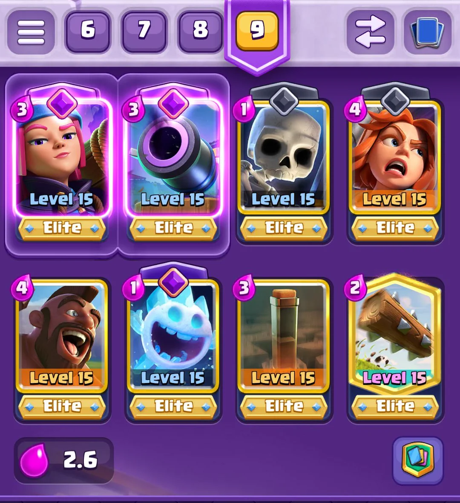

In this project you can see the different decks that we use in the game CLash Royale. Our differences in decks highlight the different play styles and different approaches we have to the game. Even though we have different decks, we are united by the love of the game and the fun we share while playing it!
The image below is my deck. It is commonly refered to as "Hogs EQ" (EQ stands for Earthquake), and there isn't really a specific reason as to why I use it, I just kept changing my deck and ended up with this. This deck is good because of it's low average elixir cost, which allows for fast-paced plays with the hogrider and earthquake to clear out towers and swarms, as well as cheap defense against higher elixir cards. This type of playstyle is my preferred one, and until I find something more fit for me, Hogs EQ will be my choice. 
| Monday | Tuesday | Wednesday | Thursday | Friday | Saturday | Sunday | |
|---|---|---|---|---|---|---|---|
| Wins | 6 | 4 | 3 | 2 | 6 | 7 | 2 |
| Loses | 7 | 5 | 5 | 4 | 5 | 3 | 3 |
| Total | 13 | 9 | 8 | 6 | 11 | 10 | 5 |
| Win% | 46.15% | 44.44% | 37.50% | 33.33% | 54.55% | 70.00% | 40.00% |
*My groupmates already said this, but I will repeat because it is very important. Some decks work better based on your current arena, so it is good to experiment with other decks. However, if you're f2p like me, then you won't have enough resources immediately to level up all of your cards. If you spread your resources too far, it will hinder your accounts progress. So instead, you should only make little tweaks to the deck you are currently using, and see if these tweaks will help against your newer, stronger opponents. Once you have gotten to the stage where you DO have enough resources, that is when you can invest in completely new decks. If u wanna Hogs EQ, I linked a good guide I found on Youtube for it. (IGNORE THIS IF UR A WHALE)